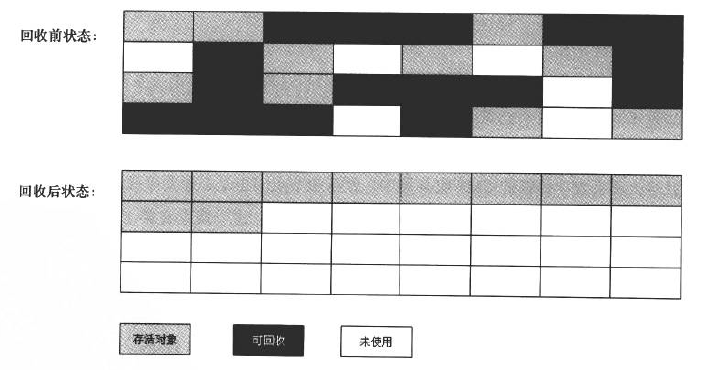

Java Memory Management, with its built-in garbage collection, is one of the language’s finest achievements. It allows developers to create new objects without worrying explicitly about memory allocation and deallocation, because the garbage collector automatically reclaims memory for reuse. This enables faster development with less boilerplate code, while eliminating memory leaks and other memory-related problems. At least in theory.
Java 语言的一大特点就是可以进行自动垃圾回收。对 Java 程序员来说，在虚拟机（JVM）自动内存管理机制的帮助下，不再需要为每一个 new 操作去写配对的 delete/free 代码，不容易出现内存泄漏和内存溢出的问题。不过也正是因为这种便利，一旦出现内存泄漏和溢出方面的问题，如果不了解虚拟机是怎样使用内存的，那么排查错误将会成为一项异常艰难的任务。
本文是对周志明先生的《 深入理解 Java 虚拟机（第二版）》第二部分—— 自动内存管理机制 做的读书笔记，想要了解更详细的内容，请阅读原著。
Java 内存区域
在介绍垃圾回收（Garbage Collection，GC）之前，首先来了解一下 JVM 运行时数据区。根据 《The Java® Virtual
Machine Specification _Java SE 8 Edition_》 的规定，Java 虚拟机所管理的内存将会包括以下几个运行时数据区域：
程序计数器
程序计数器（Program Counter Register）是一块较小的内存区域，他可以看作是当前字节码的行号指示器。每条线程都有一个独立的程序计数器，各条线程之间计数器互不影响，独立存储。它是 线程私有 的内存，也是唯一一个在 Java 虚拟机规范中没有规定任何 OutOfMemoryError 情况的区域。
Java 虚拟机栈
Java 虚拟机栈（Java Virtual Machine Stacks）也是 线程私有 的，描述的是 Java 方法的内存模型，其中的局部变量表存放了编译器可知的各种基本数据类型、对象引用和 returnAddress 类型。
如果线程请求的栈深度大于虚拟机所允许的深度，将抛出 StackOverflowError，如果虚拟机栈可以动态扩展，而扩展时无法申请到足够多的内存，就会抛出 OutOfMemoryError。Java 堆
Java 堆（Heap）是被所有 线程共享 的一块区域，在虚拟机中启动时创建。它用于存放 对象实例，是垃圾收集器管理的主要区域。如果在堆中没有内存完成实例分配，并且堆也无法再扩展时，将会抛出 OutOfMemoryError。
方法区
方法区（Method Area）是各个 线程共享 的内存区域，它用于存储已被虚拟机加载的类信息、常量、静态变量、即时编译器编译后的代码等数据。当方法区无法满足内存分配需求时，将抛出 OutOfMemoryError。运行时常量池
运行时常量池（Run-Time Constant Pool）是方法区的一部分，它包括了若干种不同的常量：从编译期可知的数值字面量到必须运行期解析后才能获得的方法或字段引用。当常量池无法再申请到内存时会抛出 OutOfMemoryError。
本地方法栈
本地方法栈（Native Method Stacks）与 Java 虚拟机栈所发挥的作用是非常相似的，也是 线程私有 的。虚拟机栈为虚拟机执行 Java 方法服务，而本地方法栈则为虚拟机使用到的 Native 方法服务。
它也会抛出 StackOverflowError 和 OutOfMemoryError。
另外，书中还介绍了直接内存（Direct Memory），它不是虚拟机运行时数据区的一部分，也不是 Java 虚拟机规范中定义的内存区域。服务器管理员在配置虚拟机参数时，会根据实际内存设置 -Xmx 等参数信息，但经常忽略直接内存，使得各内存区域总和大于物理内存限制，从而导致动态扩展时出现 OutOfMemoryError。
下图为 HotSpot 虚拟机（Java 虚拟机规范的一种实现，是 Sun JDK 和 OpenJDK 中所带的虚拟机，也是目前使用范围最广的 Java 虚拟机）的架构图。
在进行性能调优时，JVM 重点关注三个组件。其中堆是存储对象实例的地方，它由 JVM 启动时选择的垃圾收集器管理。大多数调优选项都是针对堆的大小以及如何根据情况选择最合适的垃圾收集器。JTI（Just-in-time）编译器对性能也有很大的影响，但使用新版本的 JVM 很少需要对其进行调优。
垃圾回收与内存分配
程序计数器、虚拟机栈、本地方法栈 3 个区域随线程而生，随线程而灭，它们的内存分配和回收都具备确定性。而 Java 堆和方法区则不同，一个接口中的多个实现类需要的内存可能不一样，一个方法中的多个分支需要的内存也可能不一样，我们只有在程序处于运行期间时才能知道会创建哪些对象，这部分内存的分配和回收都是动态的，垃圾回收器所关注的是这部分内存。
可达性分析算法
在主流的商用程序语言的主流实现中，都是通过 可达性分析（Reachability Analysis）来判定对象是否存活的。这个算法的基本思路就是通过一系列的称为 “GC Roots” 的对象作为起点，从这些节点开始向下搜索，搜索所走过的路径称为引用链（Reference Chain），当一个对象到 GC Roots 没有任何引用链相连（用图论的话来说，就是从 GC Roots 到这个对象不可达）时，则证明此对象是不可用的。

垃圾收集算法
标记-清除算法
标记-清除（Mark-Sweep）算法分为 “标记” 和 “清除” 两个阶段：首先标记出所有需要回收的对象，在标记完成后统一回收所有被标记的对象。它有两个不足：一是效率问题，标记和清除两个过程的效率都不高；另一个是空间问题，标记清除后会产生大量不连续的内存碎片。
复制算法
复制（Copying）算法将可用内存按容量划分为大小相等的两块，当一块内存用完了，就将还存活着的对象复制到另一块上面，然后再把已使用过的内存一次清理掉。该算法简单高效，但代价是将内存缩小为原来的一半。
现代的商业虚拟机都是采用复制算法来回收新生代，新生代中的对象 98% 是 “朝生夕死” 的，可将内存分为一块较大的 Eden 空间和两块较小的 Survivor 空间（HotSpot 虚拟机默认比例为 8 : 1 : 1），每次使用 Eden 和其中的一块 Survivor。当回收时，将 Eden 和 Survivor 中还存活着的对象一次性地复制到另外一块 Survivor 空间上，最后清理掉 Eden 和刚才用过的 Survivor 空间。当 Survivor 空间不够用时，需要依赖其他内存（这里指老年代）进行分配担保（Handle Promotion）。
标记-整理算法
标记整理（Mark-Compact）算法作用于老年代，其标记过程与 Mark-Sweep 算法一样，但后续步骤不是直接对可回收对象进行清理，而是让所有存活对象都移向一端，然后直接清理掉端边界以外的内存。

分代收集算法
当前商业虚拟机的垃圾收集都采用分代收集（Generational Collection）算法。一般把 Java 堆分为新生代和老年代：在新生代中，每次垃圾收集时都发现有大批对象死去，只有少量存活，那就选用复制算法，只需要付出少量存活对象的复制成本就可以完成收集；而老年代中因为对象存活率高、没有额外空间对它进行分配担保，就必须使用 Mark-Sweep 或者 Mark-Compact 算法进行回收。
新生代 GC（Minor GC）：指发生在新生代的垃圾收集动作，因为 Java 对象大多具有朝生夕灭的特性，所以 Minor GC 非常频繁，一般回收速度也比较块。
老年代 GC （Major GC/ Full GC）：指发生在老年代的 GC，出现了 Major GC，经常会伴随着至少一次的 Minor GC（但非绝对的，在 Parallel Scavenge 收集器的收集策略里就有直接进行 Major GC 的策略选择过程）。Major GC 的速度一般会比 Minor GC 慢 10 倍以上。
HotSpot 虚拟机使用永久代（Permanent Generation）来实现方法区，这样垃圾收集器可以像管理 Java 堆一样管理这部分内存。不过 JDK 8 已经 移除 了永久代，采用名为 Metaspace 的 Native Memory 来实现方法区，详见 这里。
垃圾收集器
下图展示了 7 种作用于不同分代的收集器（Our Collectors），如果两个收集器之间存在连线，就说明它们之间可以搭配使用。虚拟机所处的区域，则表示它是属于新生代收集器还是老年代收集器。
JDK 9 移除 了三个在 JDK 8 中被废弃的垃圾收集器组合，分别是 DefNew(Serial) + CMS、ParNew + SerialOld 以及 Incremental CMS（增量式并发收集器）。
JDK 9 使用 G1 作为默认的垃圾回收器（JDK 8 中默认为 ParallelGC，即 Parallel Scavenge + Serial Old 的组合），并将 CMS 声明为 “deprecated”，即不再提倡用户使用。
Serial 收集器
ParNew 收集器
Parallel Scavenge 收集器
Serial Old 收集器
Parallel Old 收集器
CMS 收集器
G1 收集器
有关 CMS 和 G1 收集器的详细介绍请移步 这里。
内存分配与回收策略
对象优先在 Eden 分配，大对象直接进入老年代、长期存活的对象将进入老年代、动态对象年龄判断以及空间分配担保等。
虚拟机性能监控与故障处理工具
JDK 的命令行工具
JDK 的 bin 目录中有大量的命令行工具，虽然在软件的使用说明中把它们声明为“没有技术支持并且是实验性质的”（Unsupported and experimental）的产品，但事实上，这些工具都非常稳定且功能强大，能在处理应用程序性能问题、定额为故障时发挥很大的作用。
jps：虚拟机进程状况工具
jstat：虚拟机统计信息监视工具
jinfo：Java 配置信息工具
jmap：Java 内存映像工具
jhat：虚拟机堆转储快照分析工具
jstack：Java 堆栈跟踪工具
HSDIS：JIT 生成代码反汇编
JDK 的可视化工具
JDK 中除了提供命令行工具外，还有两个功能强大的可视化工具：JConsole 和 VisualVM，这两个工具是 JDK 的正式成员，没有被贴上 Unsupported and experimental 的标签。
其中 JConsole 是在 JDK 1.5 时期就已经提供的虚拟机监控工具，而 VisualVM 在 JDK 1.6 Update7 中才首次发布，现已经成为 Sun（Oracle）主力推动的多合一故障处理工具，并且已经从 JDK 中分离出来成为可以独立发展的开源项目。
JConsole：Java 监视与管理控制台
VisualVM：多合一故障处理工具
由于 VisualVM 已迁移到 GitHub 上，安装插件时需要设置 Java VisualVM 插件中心 的 URL 为对应版本的地址。